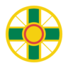

<ion-toolbar>
  <ion-buttons *ngIf="icono == 'menu'" slot="start">
    <ion-menu-button></ion-menu-button>
  </ion-buttons>

  <ion-title class="isologo">
    <h4>{{titulo}}</h4>
  </ion-title>

  <div class="header-logo" slot="end">
    
  </div>

  <ion-buttons *ngIf="icono == 'close'" class="header-logo" slot="start" (click)="atras()">
    
  </ion-buttons>
  <ion-buttons *ngIf="icono == 'back'" class="header-logo" slot="start" (click)="atras()">
    
  </ion-buttons>
</ion-toolbar>
